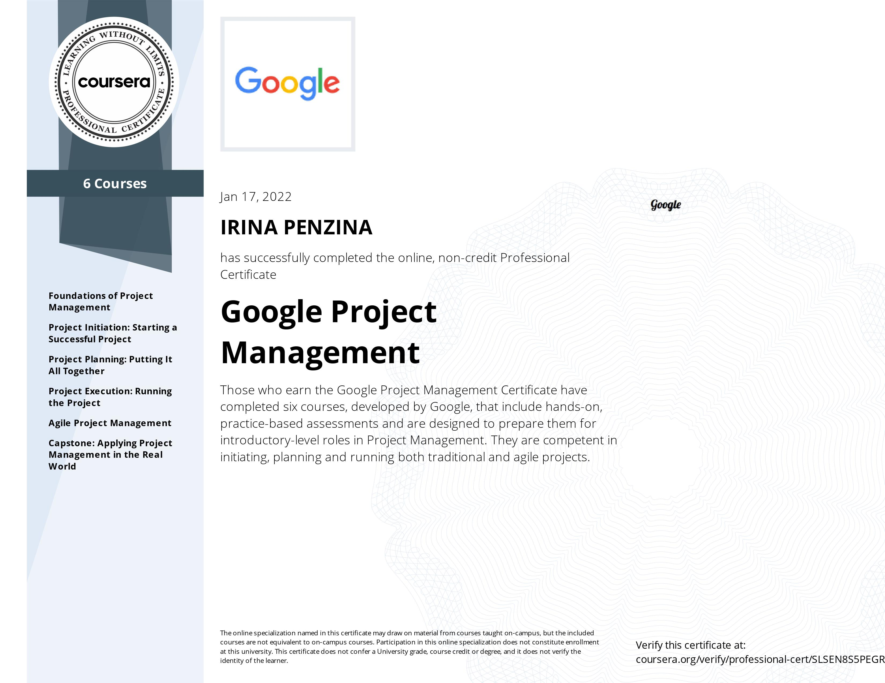
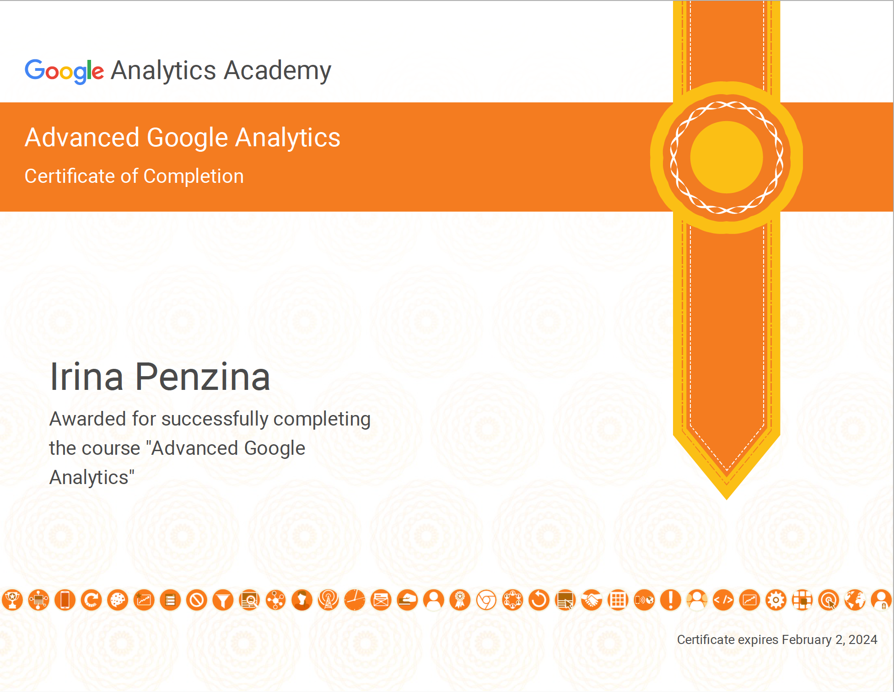

I have a master’s degree in Public Relations and more than 11 years of work experience. I helped organize a publishing house’s 35th-anniversary concert with dozens of Russia’s top singers and bands as well as a Halloween party for preschoolers. I taught advertising to university students and the alphabet to seven-year-olds. I integrated a newspaper into 5 popular tv shows and myself into 2 foreign cultures. I’ve lived on 3 continents, in 3 countries and 4 different cities. I speak 4 languages. I’ve traveled to 12 countries and hiked more than 500 km within them. For the past four years, I’ve started my morning with a yoga session.
At the age of 31, I finished cs50 Harvard on edX, and at 32, I completed a full-stack coding Bootcamp with Le Wagon. I just finished Project Management with Google. I find self-expression in Photoshop, and on the website, I developed Hungry Vegetarian.



